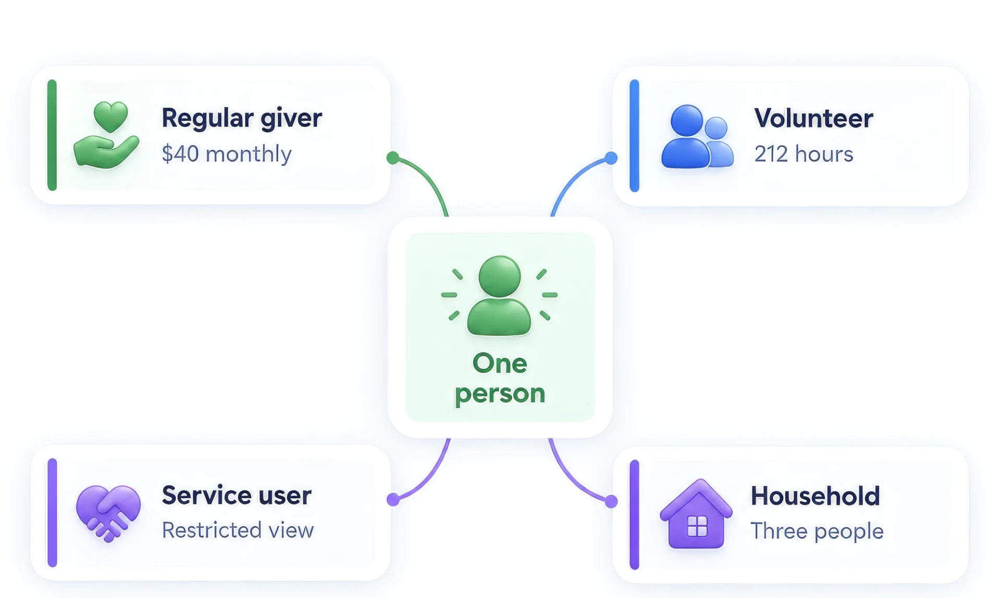

Fundraising, programmes and the people behind both, on one platform.
Agentforce Nonprofit, still widely called Nonprofit Cloud, puts giving, programme delivery, case management and outcomes on core Salesforce objects. Enable builds it around how your organisation actually works.

What Nonprofit Cloud actually covers
It is broader than fundraising, and that breadth is the point. Most nonprofits run a CRM for donors and something else entirely for the work the donations pay for. Nonprofit Cloud is the first credible Salesforce answer to having both in one place.
Fundraising
Gift transactions, gift commitments for recurring giving, designations and soft credits, with donor rollups that do not need a nightly job to be trusted.
Programme management
Programmes, cohorts, enrolments and service delivery, so the work the organisation actually does is a record rather than a spreadsheet beside the CRM.
Case management
Client intake, assessment, referral and review for social services, with the confidentiality and sharing model that kind of data demands.
Outcome measurement
Indicators, baselines and results tracked against programmes, so the impact report is generated from the data rather than reconstructed each year.
Grantmaking
For funders: applications, review, award, disbursement and reporting, on the same platform as the relationships behind them.
Volunteers and supporters
Volunteer roles, shifts and hours alongside the household and constituent model, so a person who gives time and money is one record, not two.
Why nonprofit delivery is genuinely different
Supporters, not customers
A person can be a donor, a volunteer, a service user and a board member at once. A data model built for B2B sales handles that badly, and the damage shows up in the stewardship rather than in a report.
Budget scrutiny is public
Spending on systems is visible to funders and sometimes to media. Complimentary discovery, capped fees and paying only for days used are not niceties here, they are how the decision gets defended internally.
The mission argument is real
Better supporter data means more money reaching the cause and less staff time on reconciliation. We will make that connection once, with numbers, and then get on with the build.
What Enable does here
Constituent and household modelling
How people, households, organisations and relationships are represented, decided before anything is built. Almost every painful nonprofit implementation traces back to this being settled late.
Fundraising process design
Gift entry, recurring giving, designations, soft credits, acknowledgement and receipting, built to your actual finance process rather than to a reference diagram.
Programmes, cases and outcomes
The delivery side modelled properly, including the sharing and confidentiality rules that client data in social services requires. This is where most partners stop and we do not.
Licensing and the Power of Us discount
Working out what you are actually entitled to, what the ten donated licences do and do not cover, and what the real annual cost looks like before you commit.
Tell us who your supporters are.
How you model people, households and giving decides most of what follows. It is worth an hour before anyone opens a builder.
Blair Rooney, Managing Director. blair@enabledigital.co, +64 22 226 4252.